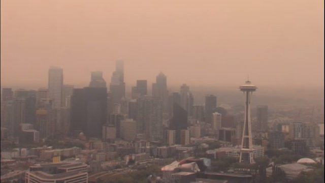

If you live in Seattle you might have noticed an amber cloud choking the life out of you.. Keep reading to find out why.

Nearby wildfires are polluting Seattle's skies, diminishing the air quality and prompting
health effects similar to heavy smoking.
Blazing wildfires along the West Coast in places like California and Canada's British Columbia
are sending smoke and ash into Seattle's air, raising the Air Quality Index to 186 as of Wednesday
afternoon. A range of 151 to 200 is classified as unhealthy. At that level, people may begin to
experience health effects. In some parts of the city, the index rose to 201, which is classified
as very unhealthy.
According to a formula created by Berkeley Earth, an Air Quality Index of 150 is equal to smoking
about seven cigarettes a day. As of Wednesday morning, Seattle ranked No. 1 on top 10 cities worldwide
with the worst air quality.